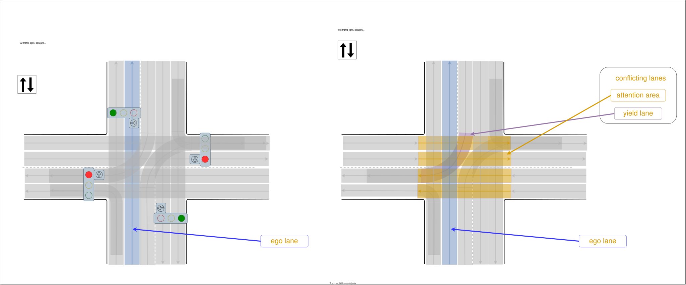
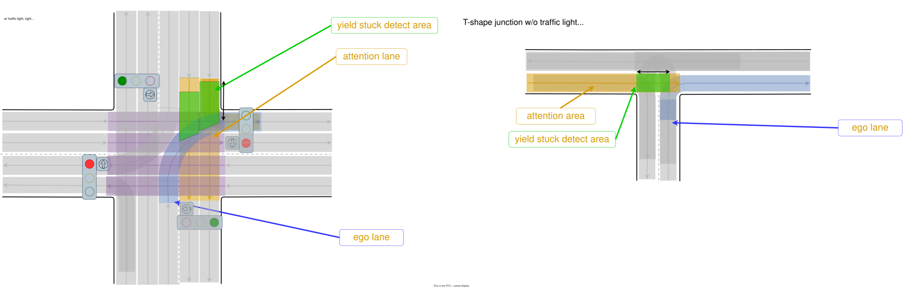
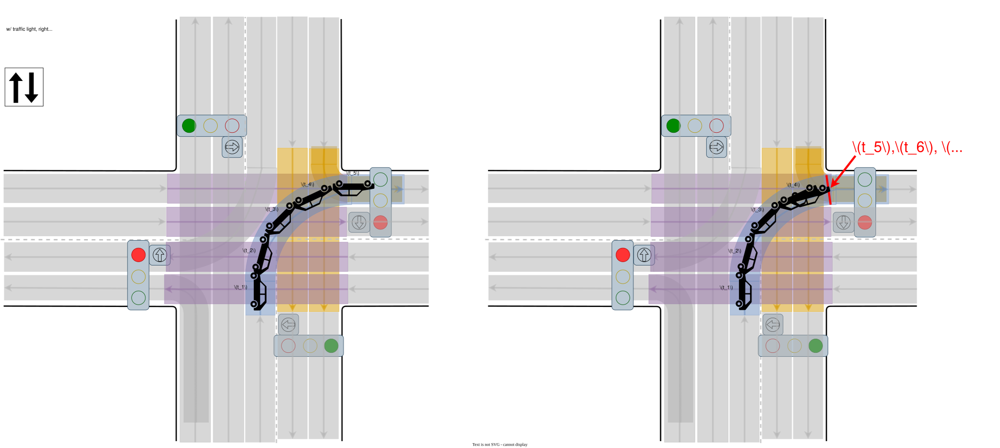
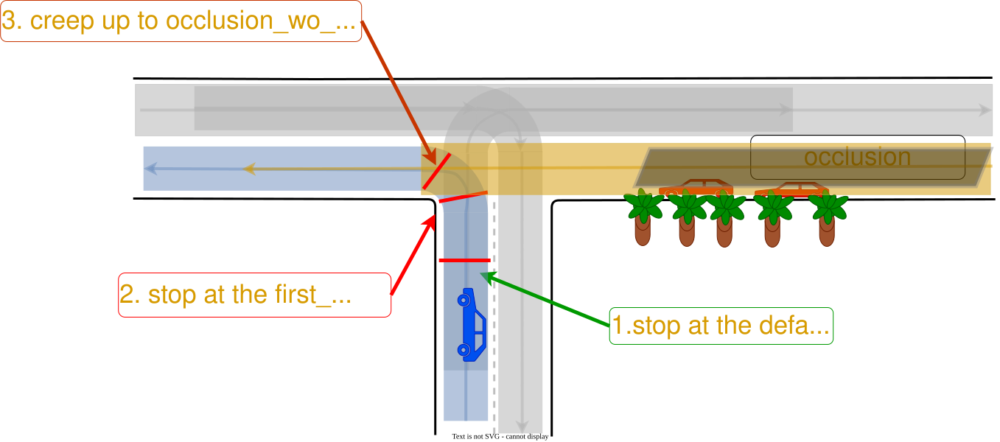

Intersection#
Role#
The intersection module is responsible for safely passing urban intersections by:
- checking collisions with upcoming vehicles
- recognizing the occluded area in the intersection
- reacting to each color/shape of associated traffic lights
This module is designed to be agnostic to left-hand/right-hand traffic rules and work for crossroads, T-shape junctions, etc. Roundabout is not formally supported in this module.

Activation condition#
This module is activated when the path contains the lanes with turn_direction tag. More precisely, if the lane_ids of the path contain the ids of those lanes, corresponding instances of intersection module are activated on each lane respectively.
Requirements/Limitations#
- The HDMap needs to have the information of turn_direction tag (which should be one of straight, left, right) for all the lanes in intersections and right_of_way tag for specific lanes (refer to RightOfWay section for more details). See autoware_lanelet2_extension document for more detail.
- WIP(perception requirements/limitations)
- WIP(sensor visibility requirements/limitations)
Attention area#
The attention area in the intersection is defined as the set of lanes that are conflicting with ego path and their preceding lanes up to common.attention_area_length meters. By default RightOfWay tag is not set, so the attention area covers all the conflicting lanes and its preceding lanes as shown in the first row. RightOfWay tag is used to rule out the lanes that each lane has priority given the traffic light relation and turn_direction priority. In the second row, purple lanes are set as the yield_lane of the ego_lane in the RightOfWay tag.

intersection_area, which is supposed to be defined on the HDMap, is an area converting the entire intersection.
In-phase/Anti-phase signal group#
The terms "in-phase signal group" and "anti-phase signal group" are introduced to distinguish the lanes by the timing of traffic light regulation as shown in below figure.

The set of intersection lanes whose color is in sync with lane L1 is called the in-phase signal group of L1, and the set of remaining lanes is called the anti-phase signal group.
How-to/Why set RightOfWay tag#
Ideally RightOfWay tag is unnecessary if ego has perfect knowledge of all traffic signal information because:
- it can distinguish which conflicting lanes should be checked because they are GREEN currently and possible collision occur with the vehicles on those lanes
- it can distinguish which conflicting lanes can be ignored because they are RED currently and there is no chance of collision with the vehicles on those lanes unless they violate the traffic rule
That allows ego to generate the attention area dynamically using the real time traffic signal information. However this ideal condition rarely holds unless the traffic signal information is provided through the infrastructure. Also there maybe be very complicated/bad intersection maps where multiple lanes overlap in a complex manner.
- If there is an perfect access to entire traffic light signal, then you can set
common.use_map_right_of_wayto false and there is no need to set RightOfWay tag on the map. The intersection module will generate the attention area by checking traffic signal and corresponding conflicting lanes. This feature is not implemented yet. - If traffic signal information is not perfect, then set
common.use_map_right_of_wayto true. If you do not want to detect vehicles on the anti-phase signal group lanes, set them as yield_lane for ego lane. - Even if there are no traffic lights if the intersection lanes are overlapped in a ugly manner, you may need to set RightOfWay tag. For example if adjacent intersection lanes of the same in-phase group are not sharing the boundary line and overlapped a little bit, you may need to set RightOfWay to each other for them in order to avoid unnecessary stop for vehicle on such unrelated lane.
To help the intersection module care only a set of limited lanes, RightOfWay tag needs to be properly set.
Following table shows an example of how to set yield_lanes to each lane in a intersection w/o traffic lights. Since it is not apparent how to uniquely determine signal phase group for a set of intersection lanes in geometric/topological manner, yield_lane needs to be set manually. Straight lanes with traffic lights are exceptionally handled to detect no lanes because commonly it has priority over all the other lanes, so no RightOfWay setting is required.
| turn direction of right_of_way | yield_lane(with traffic light) | yield_lane(without traffic light) |
|---|---|---|
| straight | not need to set yield_lane(this case is special) | left/right conflicting lanes of in-phase group |
| left(Left hand traffic) | all conflicting lanes of the anti-phase group and right conflicting lanes of in-phase group | right conflicting lanes of in-phase group |
| right(Left hand traffic) | all conflicting lanes of the anti-phase group | no yield_lane |
| left(Right hand traffic) | all conflicting lanes of the anti-phase group | no yield_lane |
| right(Right hand traffic) | all conflicting lanes of the anti-phase group and right conflicting lanes of in-phase group | left conflicting lanes of in-phase group |
This setting gives the following attention_area configurations.



For complex/bad intersection map like the one illustrated below, additional RightOfWay setting maybe necessary.

The bad points are:
- ego lane is overlapped with adjacent lane of the in-phase group. In this case you need to set this lane as yield_lane additionally because otherwise attention area is generated for its preceding lanes as well, which may cause unwanted stop.
- ego lane is overlapped with unrelated lane. In this case the lane is right-turn only and there is no chance of collision in theory. But you need to set this lane as yield_lane additionally for the same reason as (1).
Possible stop lines#
Following figure illustrates important positions used in the intersection module. Note that each solid line represents ego front line position and the corresponding dot represents the actual inserted stop point position for the vehicle frame, namely the center of the rear wheel.

To precisely calculate stop positions, the path is interpolated at the certain interval of common.path_interpolation_ds.
- closest_idx denotes the path point index which is closest to ego position.
- first_attention_stopline denotes the first path point where ego footprint intersects with the attention_area.
- If a stopline is associated with the intersection lane on the map, that line is used as default_stopline for collision detection. Otherwise the point which is
common.default_stopline_marginmeters behind first_attention_stopline is defined as default_stopline instead. - occlusion_peeking_stopline is a bit ahead of first_attention_stopline as described later.
- occlusion_wo_tl_pass_judge_line is the first position where ego footprint intersects with the centerline of the first attention_area lane.
Target objects#
For stuck vehicle detection and collision detection, this module checks car, bus, truck, trailer, motor cycle, and bicycle type objects.
Objects that satisfy all of the following conditions are considered as target objects (possible collision objects):
- The center of the object is within a certain distance from the attention lane (threshold =
common.attention_area_margin) .- (Optional condition) The center of the object is in the intersection area.
- To deal with objects that is in the area not covered by the lanelets in the intersection.
- (Optional condition) The center of the object is in the intersection area.
- The posture of object is the same direction as the attention lane (threshold =
common.attention_area_angle_threshold). - Not being in the adjacent lanes of ego.
Overview of decision process#
There are several behaviors depending on the scene.
| behavior | scene | action |
|---|---|---|
| Safe | Ego detected no occlusion and collision | Ego passes the intersection |
| StuckStop | The exit of the intersection is blocked by traffic jam | Ego stops before the intersection or the boundary of attention area |
| YieldStuck | Another vehicle stops to yield ego | Ego stops before the intersection or the boundary of attention area |
| NonOccludedCollisionStop | Ego detects no occlusion but detects collision | Ego stops at default_stopline |
| FirstWaitBeforeOcclusion | Ego detected occlusion when entering the intersection | Ego stops at default_stopline at first |
| PeekingTowardOcclusion | Ego detected occlusion and but no collision within the FOV (after FirstWaitBeforeOcclusion) | Ego approaches the boundary of the attention area slowly |
| OccludedCollisionStop | Ego detected both occlusion and collision (after FirstWaitBeforeOcclusion) | Ego stops immediately |
| FullyPrioritized | Ego is fully prioritized by the RED/Arrow signal | Ego only cares vehicles still running inside the intersection. Occlusion is ignored |
| OverPassJudgeLine | Ego is already inside the attention area and/or cannot stop before the boundary of attention area | Ego does not detect collision/occlusion anymore and passes the intersection |
![uml diagram]()
Stuck Vehicle Detection#
If there is any object on the path inside the intersection and at the exit of the intersection (up to stuck_vehicle.stuck_vehicle_detect_dist) lane and its velocity is less than the threshold (stuck_vehicle.stuck_vehicle_velocity_threshold), the object is regarded as a stuck vehicle. If stuck vehicles exist, this module inserts a stopline a certain distance (=default_stopline_margin) before the overlapped region with other lanes. The stuck vehicle detection area is generated based on the planned path, so the stuck vehicle stopline is not inserted if the upstream module generated an avoidance path.

Yield stuck vehicle detection#
If there is any stopped object on the attention lanelet between the intersection point with ego path and the position which is yield_stuck.distance_threshold before that position, the object is regarded as yielding to ego vehicle. In this case ego is given the right-of-way by the yielding object but this module inserts stopline to prevent entry into the intersection. This scene happens when the object is yielding against ego or the object is waiting before the crosswalk around the exit of the intersection.

Collision detection#
The following process is performed for the targets objects to determine whether ego can pass the intersection safely. If it is judged that ego cannot pass the intersection with enough margin, this module inserts a stopline on the path.
- predict the time \(t\) when the object intersects with ego path for the first time from the predicted path time step. Only the predicted whose confidence is greater than
collision_detection.min_predicted_path_confidenceis used. - detect collision between the predicted path and ego's predicted path in the following process
- calculate the collision interval of [\(t\) -
collision_detection.collision_start_margin_time, \(t\) +collision_detection.collision_end_margin_time] - calculate the passing area of ego during the collision interval from the array of (time, distance) obtained by smoothed velocity profile
- check if ego passing area and object predicted path interval collides
- calculate the collision interval of [\(t\) -
- if collision is detected, the module inserts a stopline
- if ego is over the pass_judge_line, collision checking is skipped to avoid sudden braking and/or unnecessary stop in the middle of the intersection
The parameters collision_detection.collision_start_margin_time and collision_detection.collision_end_margin_time can be interpreted as follows:
- If ego was to pass the intersection earlier than the target object, collision would be detected if the time difference between the two was less than
collision_detection.collision_start_margin_time. - If ego was to pass the intersection later than the target object, collision would be detected if the time difference between the two was less than
collision_detection.collision_end_margin_time.
If collision is detected, the state transits to "STOP" immediately. On the other hand, the state does not transit to "GO" unless safe judgement continues for a certain period collision_detection.collision_detection_hold_time to prevent the chattering of decisions.
Currently, the intersection module uses motion_velocity_smoother feature to precisely calculate ego velocity profile along the intersection lane under longitudinal/lateral constraints. If the flag collision_detection.velocity_profile.use_upstream is true, the target velocity profile of the original path is used. Otherwise the target velocity is set to collision.velocity_profile.default_velocity. In the trajectory smoothing process the target velocity at/before ego trajectory points are set to ego current velocity. The smoothed trajectory is then converted to an array of (time, distance) which indicates the arrival time to each trajectory point on the path from current ego position. You can visualize this array by adding the lane id to debug.ttc and running
bash
ros2 run behavior_velocity_intersection_module ttc.py --lane_id <lane_id>

about use_upstream_velocity flag#
There are some use cases where ego should check collision before entering the intersection considering the temporal stop by walkway/crosswalk module around the exit of the intersection, because their stop position can be inside the intersection and it could bother upcoming vehicles. By setting the flag collision_detection.velocity_profile.use_upstream to true and running the walkway/crosswalk module prior to this module, ego velocity profile is calculated considering their velocity and stop positions.
As illustrated in below figure if upstream module inserted a stopline, ego position profile will remain there for the infinite time, thus it leads to the judgement that ego cannot exit the intersection during the interval [\(t\) - collision_detection.collision_start_margin_time, \(t\) + collision_detection.collision_end_margin_time]. In this way this feature considers possible collision for the infinite time if stoplines exist ahead of ego position (practically the prediction horizon is limited so the collision check horizon is bounded).

Occlusion detection#
If the flag occlusion.enable is true this module checks if there is sufficient field of view (FOV) on the attention area up to occlusion.occlusion_attention_area_length. If FOV is not clear enough ego first makes a brief stop at default_stopline for occlusion.temporal_stop_time_before_peeking, and inserts stopline at occlusion_peeking_stopline, thus slowly creeping toward there.
During the creeping if collision is detected this module inserts a stop line in front of ego immediately, and if the FOV gets sufficiently clear the intersection_occlusion wall will disappear. If occlusion is cleared and no collision is detected ego will pass the intersection.
The occlusion is detected as the common area of occlusion attention area(which is partially the same as the normal attention area) and the unknown cells of the occupancy grid map. The occupancy grid map is denoised using morphology with the window size of occlusion.denoise_kernel. The occlusion attention area lanes are discretized to line strings and they are used to generate a grid whose each cell represents the distance from ego path along the lane as shown below.

If the nearest occlusion cell value is below the threshold occlusion.occlusion_required_clearance_distance, it means that the FOV of ego is not clear. It is expected that the occlusion gets cleared as the vehicle approaches the occlusion peeking stop line.
Occlusion source estimation at intersection with traffic light#
At intersection with traffic light, the whereabout of occlusion is estimated by checking if there are any objects between ego and the nearest occlusion cell. While the occlusion is estimated to be caused by some object (DYNAMICALLY occluded), intersection_wall appears at all times. If no objects are found between ego and the nearest occlusion cell (STATICALLY occluded), after ego stopped for the duration of occlusion.static_occlusion_with_traffic_light_timeout plus occlusion.occlusion_detection_hold_time, occlusion is intentionally ignored to avoid stuck.

The remaining time is visualized on the intersection_occlusion virtual wall.

Occlusion handling at intersection without traffic light#
At intersection without traffic light, if occlusion is detected, ego makes a brief stop at default_stopline and first_attention_stopline respectively. After stopping at the first_attention_area_stopline this module inserts occlusion.absence_traffic_light.creep_velocity velocity between ego and occlusion_wo_tl_pass_judge_line while occlusion is not cleared. If collision is detected, ego immediately stops. Once the occlusion is cleared or ego has passed occlusion_wo_tl_pass_judge_line this module does not detect collision and occlusion because ego footprint is already inside the intersection.

If the flag occlusion.request_approval_wo_traffic_light is true, intersection_occlusion requests approval from RTC operator. If it is false, it does not request approval after tbe brief stop even if occlusion is not sufficiently cleared.
While ego is creeping, yellow intersection_wall appears in front ego.

Map-based forced RTC#
RTC can be enabled for specific intersection lanelets such that even if approval is not required by default, it will be required before crossing the corresponding intersection lanelets. The following attribute should be added to the lanelet in intersection in the map file:
xml
<tag k='rtc_approval_required_v1' v='intersection' />
The value can be set to intersection, intersection_occlusion, or intersection,intersection_occlusion, to adjust which modules will require approvals.
Traffic signal specific behavior#
Collision detection#
TTC parameter varies depending on the traffic light color/shape as follows.
| traffic light color | ttc(start) | ttc(end) |
|---|---|---|
| GREEN | collision_detection.not_prioritized.collision_start_margin |
collision_detection.not_prioritized.collision_end_margin |
| AMBER | collision_detection.partially_prioritized.collision_start_end_margin |
collision_detection.partially_prioritized.collision_start_end_margin |
| RED / Arrow | collision_detection.fully_prioritized.collision_start_end_margin |
collision_detection.fully_prioritized.collision_start_end_margin |
yield on GREEN#
If the traffic light color changed to GREEN and ego approached the entry of the intersection lane within the distance collision_detection.yield_on_green_traffic_light.distance_to_assigned_lanelet_start and there is any object whose distance to its stopline is less than collision_detection.yield_on_green_traffic_light.object_dist_to_stopline, this module commands to stop for the duration of collision_detection.yield_on_green_traffic_light.duration at default_stopline.
skip on AMBER#
If the traffic light color is AMBER but the object is expected to stop before its stopline under the deceleration of collision_detection.ignore_on_amber_traffic_light.object_expected_deceleration, collision checking is skipped.
skip on RED#
If the traffic light color is RED or Arrow signal is turned on, the attention lanes which are not conflicting with ego lane are not used for detection. And even if the object stops with a certain overshoot from its stopline, but its expected stop position under the deceleration of collision_detection.ignore_on_amber_traffic_light.object_expected_deceleration is more than the distance collision_detection.ignore_on_red_traffic_light.object_margin_to_path from collision point, the object is ignored.
Occlusion detection#
When the traffic light color/shape is RED/Arrow, occlusion detection is skipped.

Pass Judge Line#
Generally it is not tolerable for vehicles that have lower traffic priority to stop in the middle of the unprotected area in intersections, and they need to stop at the stop line beforehand if there will be any risk of collision, which introduces two requirements:
- The vehicle must start braking before the boundary of the unprotected area at least by the braking distance if it is supposed to stop
- The vehicle must recognize upcoming vehicles and check safety beforehand with enough braking distance margin if it is supposed to go
- And the SAFE decision must be absolutely certain and remain to be valid for the future horizon so that the safety condition will be always satisfied while ego is driving inside the unprotected area.
- (TODO): Since it is almost impossible to make perfectly safe decision beforehand given the limited detection range/velocity tracking performance, intersection module should plan risk-evasive acceleration velocity profile AND/OR relax lateral acceleration limit while ego is driving inside the unprotected area, if the safety decision is "betrayed" later due to the following reasons:
- The situation turned out to be dangerous later, mainly because velocity tracking was underestimated or the object accelerated beyond TTC margin
- The situation turned dangerous later, mainly because the object is suddenly detected out of nowhere
The position which is before the boundary of unprotected area by the braking distance which is obtained by
plus an additional margin common.pass_judge_line_margin is called pass_judge_line, and safety decision must be made before ego passes this position because ego does not stop anymore. pass_judge_line are illustrated in the following figure(2nd_pass_judge_line is deprecated).

Intersection module will command to GO if
- ego is over pass judge line AND
- ego judged SAFE previously AND
because it is expected to stop or continue stop decision if
- ego is before pass_judge_line OR
- reason: it has enough braking distance margin
- ego judged UNSAFE previously
- reason: ego is now trying to stop and should continue stop decision if collision is detected in later calculation
For the 3rd condition, it is possible that ego stops with some overshoot to the unprotected area while it is trying to stop for collision detection, because ego should keep stop decision while UNSAFE decision is made even if it passed pass_judge_line during deceleration.
For the 4th condition, at intersections with 2nd attention lane, even if ego is over the pass_judge_line, still intersection module commands to stop if the most probable collision is expected to happen in the 2nd attention lane.
Also if occlusion.enable is true, the position of pass_judge line changes to occlusion_peeking_stopline if ego passed the original pass_judge_line position while ego is peeking. Otherwise ego could inadvertently judge that it passed pass_judge during peeking and then abort peeking.
Data Structure#
Each data structure is defined in util_type.hpp.

IntersectionLanelets#
![uml diagram]()
IntersectionStopLines#
Each stop lines are generated from interpolated path points to obtain precise positions.
![uml diagram]()
TargetObject#
TargetObject holds the object, its belonging lane and corresponding stopline information.
![uml diagram]()
Module Parameters#
common#
| Parameter | Type | Description |
|---|---|---|
.attention_area_length |
double | [m] range for object detection |
.attention_area_margin |
double | [m] margin for expanding attention area width |
.attention_area_angle_threshold |
double | [rad] threshold of angle difference between the detected object and lane |
.use_intersection_area |
bool | [-] flag to use intersection_area for collision detection |
.default_stopline_margin |
double | [m] margin before_stop_line |
.pass_judge_line_margin |
double | [m] additional margin for pass_judge_line position from first_attention_stopline |
.stopline_overshoot_margin |
double | [m] margin for the overshoot from stopline |
.max_accel |
double | [m/ss] max acceleration for stop |
.max_jerk |
double | [m/sss] max jerk for stop |
.delay_response_time |
double | [s] action delay before stop |
.enable_pass_judge_before_default_stopline |
bool | [-] flag not to stop before default_stopline even if ego is over pass_judge_line |
stuck_vehicle/yield_stuck#
| Parameter | Type | Description |
|---|---|---|
stuck_vehicle.turn_direction |
- | [-] turn_direction specifier for stuck vehicle detection |
stuck_vehicle.stuck_vehicle_detect_dist |
double | [m] length toward from the exit of intersection for stuck vehicle detection |
stuck_vehicle.stuck_vehicle_velocity_threshold |
double | [m/s] velocity threshold for stuck vehicle detection |
yield_stuck.distance_threshold |
double | [m/s] distance threshold of yield stuck vehicle from ego path along the lane |
collision_detection#
| Parameter | Type | Description |
|---|---|---|
.consider_wrong_direction_vehicle |
bool | [-] flag to detect objects in the wrong direction |
.collision_detection_hold_time |
double | [s] hold time of collision detection |
.min_predicted_path_confidence |
double | [-] minimum confidence value of predicted path to use for collision detection |
.keep_detection_velocity_threshold |
double | [s] ego velocity threshold for continuing collision detection before pass judge line |
.velocity_profile.use_upstream |
bool | [-] flag to use velocity profile planned by upstream modules |
.velocity_profile.minimum_upstream_velocity |
double | [m/s] minimum velocity of upstream velocity profile to avoid zero division |
.velocity_profile.default_velocity |
double | [m/s] constant velocity profile when use_upstream is false |
.velocity_profile.minimum_default_velocity |
double | [m/s] minimum velocity of default velocity profile to avoid zero division |
.yield_on_green_traffic_light |
- | [-] description |
.ignore_amber_traffic_light |
- | [-] description |
.ignore_on_red_traffic_light |
- | [-] description |
occlusion#
| Parameter | Type | Description |
|---|---|---|
.enable |
bool | [-] flag to calculate occlusion detection |
.request_approval_wo_traffic_light |
bool | [-] flag to request RTC approval when occluded without traffic light |
.occlusion_attention_area_length |
double | [m] the length of attention are for occlusion detection |
.free_space_max |
int | [-] maximum value of occupancy grid cell to treat at occluded |
.occupied_min |
int | [-] minimum value of occupancy grid cell to treat at occluded |
.denoise_kernel |
double | [m] morphology window size for preprocessing raw occupancy grid |
.attention_lane_crop_curvature_threshold |
double | [m] curvature threshold for trimming curved part of the lane |
.attention_lane_crop_curvature_ds |
double | [m] discretization interval of centerline for lane curvature calculation |
.creep_during_peeking.enable |
bool | [-] flag to insert creep_velocity while peeking to intersection occlusion stopline |
.creep_during_peeking.creep_velocity |
double | [m/s] the command velocity while peeking to intersection occlusion stopline |
.peeking_offset |
double | [m] the offset of the front of the vehicle into the attention area for peeking to occlusion |
.occlusion_required_clearance_distance |
double | [m] threshold for the distance to nearest occlusion cell from ego path |
.possible_object_bbox |
[double] | [m] minimum bounding box size for checking if occlusion polygon is small enough |
.ignore_parked_vehicle_speed_threshold |
double | [m/s] velocity threshold for checking parked vehicle |
.occlusion_detection_hold_time |
double | [s] hold time of occlusion detection |
.temporal_stop_time_before_peeking |
double | [s] temporal stop duration at default_stopline before starting peeking |
.creep_velocity_without_traffic_light |
double | [m/s] creep velocity to occlusion_wo_tl_pass_judge_line |
.static_occlusion_with_traffic_light_timeout |
double | [s] the timeout duration for ignoring static occlusion at intersection with traffic light |
Trouble shooting#
Intersection module stops against unrelated vehicles#
In this case, first visualize /planning/scenario_planning/lane_driving/behavior_planning/behavior_velocity_planner/debug/intersection topic and check the attention_area polygon. Intersection module performs collision checking for vehicles running on this polygon, so if it extends to unintended lanes, it needs to have RightOfWay tag.
By lowering common.attention_area_length you can check which lanes are conflicting with the intersection lane. Then set part of the conflicting lanes as the yield_lane.
The stop line of intersection is chattering#
The parameter collision_detection.collision_detection_hold_time suppresses the chattering by keeping UNSAFE decision for this duration until SAFE decision is finally made. The role of this parameter is to account for unstable detection/tracking of objects. By increasing this value you can suppress the chattering. However it could elongate the stopping duration excessively.
If the chattering arises from the acceleration/deceleration of target vehicles, increase collision_detection.collision_detection.collision_end_margin_time and/or collision_detection.collision_detection.collision_end_margin_time.
The stop line is released too fast/slow#
If the intersection wall appears too fast, or ego tends to stop too conservatively for upcoming vehicles, lower the parameter collision_detection.collision_detection.collision_start_margin_time. If it lasts too long after the target vehicle passed, then lower the parameter collision_detection.collision_detection.collision_end_margin_time.
Ego suddenly stops at intersection with traffic light#
If the traffic light color changed from AMBER/RED to UNKNOWN, the intersection module works in the GREEN color mode. So collision and occlusion are likely to be detected again.
Occlusion is detected overly#
You can check which areas are detected as occlusion by visualizing /planning/scenario_planning/lane_driving/behavior_planning/behavior_velocity_planner/debug/intersection/occlusion_polygons.
If you do not want to detect / do want to ignore occlusion far from ego or lower the computational cost of occlusion detection, occlusion.occlusion_attention_area_length should be set to lower value.
If you want to care the occlusion nearby ego more cautiously, set occlusion.occlusion_required_clearance_distance to a larger value. Then ego will approach the occlusion_peeking_stopline more closely to assure more clear FOV.
occlusion.possible_object_bbox is used for checking if detected occlusion area is small enough that no vehicles larger than this size can exist inside. By decreasing this size ego will ignore small occluded area.
occupancy grid map tuning#
Refer to the document of autoware_probabilistic_occupancy_grid_map for details. If occlusion tends to be detected at apparently free space, increase occlusion.free_space_max to ignore them.
in simple_planning_simulator#
intersection_occlusion feature is not recommended for use in planning_simulator because the laserscan_based_occupancy_grid_map generates unnatural UNKNOWN cells in 2D manner:
- all the cells behind pedestrians are UNKNOWN
- no ground point clouds are generated
Also many users do not set traffic light information frequently although it is very critical for intersection_occlusion (and in real traffic environment too).
For these reasons, occlusion.enable is false by default.
on real vehicle / in end-to-end simulator#
On real vehicle or in end-to-end simulator like AWSIM the following pointcloud_based_occupancy_grid_map configuration is highly recommended:
```yaml scan_origin_frame: "velodyne_top"
grid_map_type: "OccupancyGridMapProjectiveBlindSpot" OccupancyGridMapProjectiveBlindSpot: projection_dz_threshold: 0.01 # [m] for avoiding null division obstacle_separation_threshold: 1.0 # [m] fill the interval between obstacles with unknown for this length ```
You should set the top lidar link as the scan_origin_frame. In the example it is velodyne_top. The method OccupancyGridMapProjectiveBlindSpot estimates the FOV by running projective ray-tracing from scan_origin to obstacle or up to the ground and filling the cells on the "shadow" of the object as UNKNOWN.
Flowchart#
WIP
![uml diagram]()
Merge From Private#
Role#
When an ego enters a public road from a private road (e.g. a parking lot), it needs to face and stop before entering the public road to make sure it is safe.
This module is activated when there is an intersection at the private area from which the vehicle enters the public road. The stop line is generated both when the goal is in the intersection lane and when the path goes beyond the intersection lane. The basic behavior is the same as the intersection module, but ego must stop once at the stop line.

Activation Timing#
This module is activated when the following conditions are met:
- ego-lane has a
privatetag - ego-lane has a conflict with other no-private lanelets
Module Parameters#
| Parameter | Type | Description |
|---|---|---|
merge_from_private_road/stop_duration_sec |
double | [m] time margin to change state |
Known Issue#
If ego go over the stop line for a certain distance, then it will not transit from STOP.
Test Maps#
The intersections lanelet map consist of a variety of intersections including:
- 4-way crossing with traffic light
- 4-way crossing without traffic light
- T-shape crossing without traffic light
- intersection with a loop
- complicated intersection